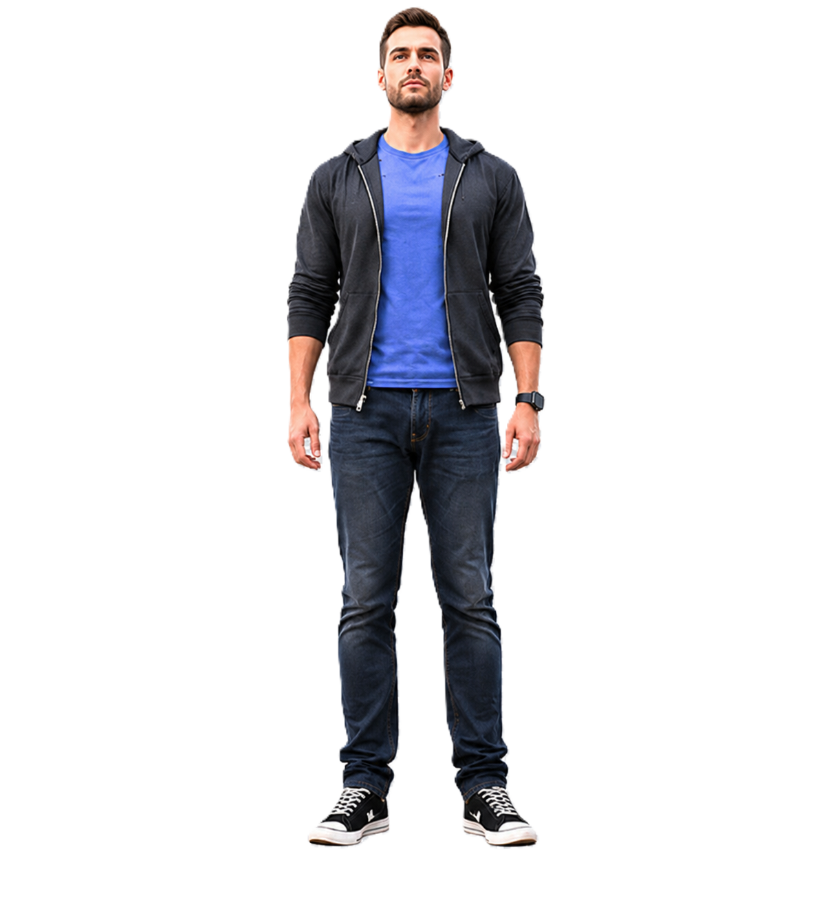
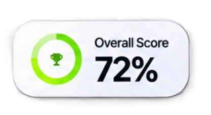
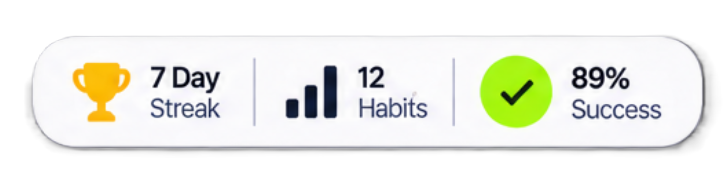
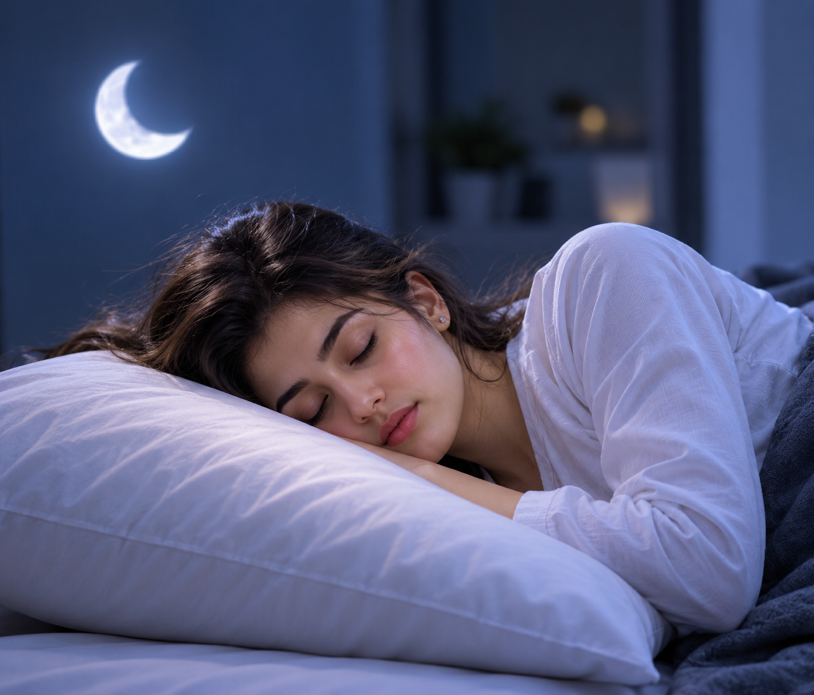
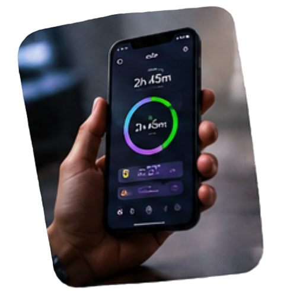

Our Routine
Our Routine
A BETTER ROUTINE
Small habits add up.
With a little consistency, everyday choices can support more energy and focus.
↗Sleep8h+
↗Productivity90%
↗Movement4×/week
STACKED helps you understand your routines, compare possible futures, and make measurable changes.
Start with STACKED →



From sleep to productivity, each habit contributes to the bigger picture.
Explore your habits →
Rest that moves you forward.
Build a steadier sleep rhythm ↗
Build strength through consistency.
Make movement part of your day ↗Make room for focused work.
Protect time for focused work ↗
Take back your attention.
Give your attention room to breathe ↗Our Routine
With a little consistency, everyday choices can support more energy and focus.
↗Sleep8h+
↗Productivity90%
↗Movement4×/week
Compare today’s rhythm with the small changes you choose to practice.
 Same routine
Same routine
Current patterns are a starting point for reflection, not a fixed future.
−Sleep5h
−Productivity45%
−Movement0×/week
Start where you are. STACKED helps turn your patterns into practical next steps.
See how it works →Personalized targets are created from your profile insights and ready for daily check-ins.
View your goals →AI suggested targets appear after you complete a profile area.
Join STACKED and take a clearer, more intentional view of your future.
